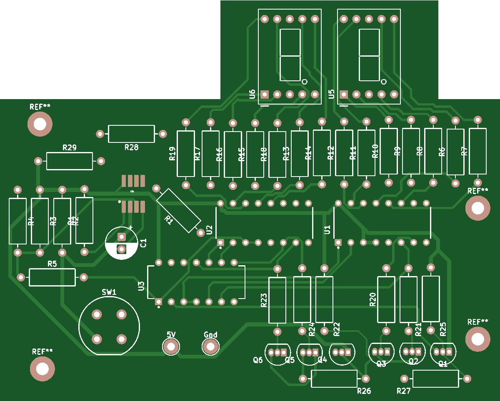
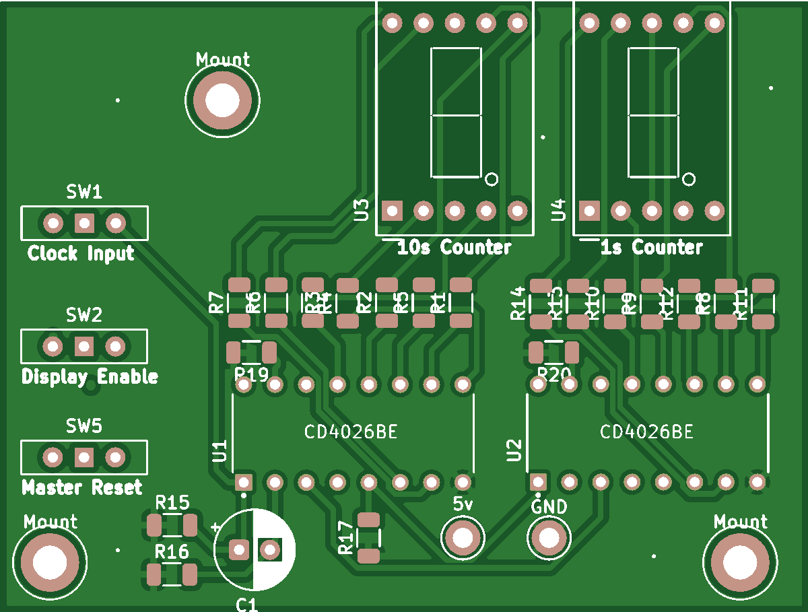
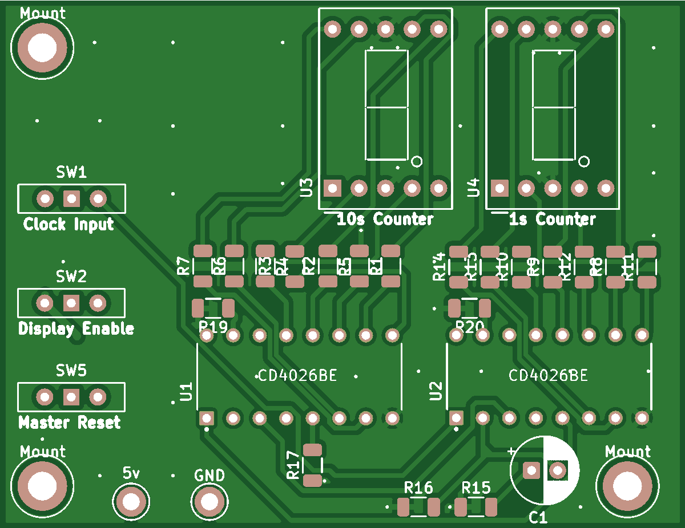
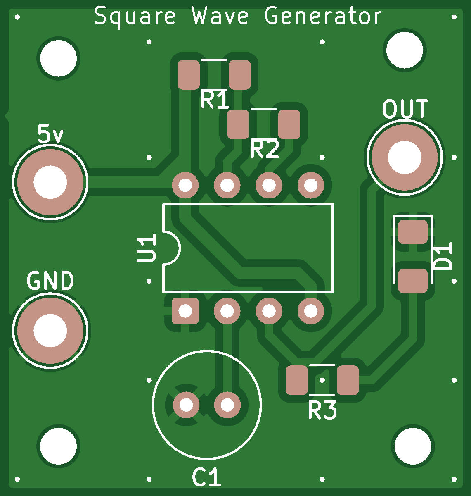

Custom PCB Designs
KiCad • Hardware Logic • Carrier Boards • Manufacturing
Project Directory
Autonomous Vehicle Uno Hat
Overview
During the Autonomous Vehicle Challenge, the vehicle suffered from intense vibration across the competition floor. Standard breadboard jumper wires frequently wiggled loose, causing critical sensor failures. To solve this, I designed a custom printed circuit board that acts as a "Hat" or shield sitting directly on top of the Arduino Uno R3.
The board serves as the central nervous system for the lower-level hardware, consolidating power distribution and providing dedicated, locking JST connectors for all environmental sensors (IMU, Ultrasonics, Voice modules).

Core Parts List
- Arduino Uno R3 Female Headers
- JST-XH 4-Pin / 5-Pin Connectors
- Buck Converter (12V to 5V Step-Down)
- Decoupling Capacitors (Ceramic 100nF)
- SMD Diagnostic Test Points
Conclusion
By migrating to a manufactured PCB, sensor dropouts were entirely eliminated. The inclusion of diagnostic test points allowed the team to probe logic lines with an oscilloscope directly on the field without disconnecting any hardware. This reliability upgrade was a major factor in securing 1st place in the 2025-2026 season.
Piezo Amplifier Circuit
Overview
Piezoelectric elements are incredibly sensitive but produce notoriously high-impedance, low-current signals that are difficult for standard microcontrollers to interpret accurately. This project involved designing a custom amplification and signal-conditioning board specifically for interfacing with piezo transducers.


Core Parts List
- Operational Amplifiers (e.g., TL072 / LM358)
- Piezoelectric Transducer
- 1MΩ+ Input Bias Resistors
- Low-Pass Filter Ceramic Capacitors
- BNC / Screw Terminal Connectors
Conclusion
The final board successfully buffered the high-impedance input and amplified the micro-volt piezo pulses into clean, readable 3.3V analog signals. Learning to manage parasitic capacitance in the PCB trace routing was critical for maintaining signal integrity in this project.
ATtiny85 Counter Carrier Board
Overview
After reaching the limits of purely discrete hardware counters (detailed below), I transitioned the counting logic to software using the 8-bit ATtiny85 microcontroller. Because the ATtiny85 has limited pins, this carrier board was designed to integrate the MCU with shift registers to drive external displays while maintaining a minimal physical footprint.

Core Parts List
- ATtiny85 Microcontroller (DIP-8)
- 74HC595 8-bit Shift Register
- ISP (In-System Programming) 6-Pin Header
- Push-button Tactile Switches
- 10kΩ Pull-up Resistors
Conclusion
This carrier board represented a massive leap in efficiency. By moving the counting logic into C++ software flashed to the ATtiny85, I was able to implement software debouncing for the buttons, drastically reduce the total component count, and create a board that could be reprogrammed via the ISP header without needing to fabricate a new PCB.
Discrete Hardware Counters (3 Revisions)
Overview
Before moving to microcontrollers, I spent significant time mastering digital logic by building entirely hardware-based counting circuits. Over three distinct PCB revisions, I designed boards that accepted manual pulse inputs and drove dual 7-segment displays using only discrete logic ICs.
The first revision utilized complex through-hole components and discrete NPN transistors. Revisions 2 and 3 greatly optimized the routing footprint by migrating to a cleaner SMD layout utilizing the CD4026BE, which elegantly combines the decade counter and 7-segment decoder logic into a single IC package.



Core Parts List
- CD4026BE (CMOS Decade Counters / 7-Segment Decoders)
- Dual 7-Segment Displays (Through-hole)
- NPN Transistors (Revision 1)
- SMD & Through-hole Current Limiting Resistors
- Headers for Clock Input, Master Reset, and Display Enable
Conclusion
Designing three revisions of this board provided invaluable experience with KiCad layout software. I learned how to manage routing intersections on a 2-layer board and visually traced the iterations from a cluttered through-hole design down to an organized SMD layout. While the ATtiny85 ultimately replaced this design, the foundational knowledge of digital logic propagation delay remains critical to my workflow.
555 Timer Square Wave Generator
Overview
Every electronics workbench needs a reliable clock signal. This project is a custom PCB housing a 555 Timer IC configured in Astable mode to generate a continuous square wave. The board was designed to be small and modular, breaking out standard power and signal lines to easily integrate into other projects.
The frequency ($f$) of the generated wave is governed by the values of the onboard resistors and capacitors according to the standard astable equation:

Core Parts List
- NE555 Precision Timer IC (DIP-8)
- SMD Resistors (R1, R2, R3)
- Electrolytic Timing Capacitor (C1)
- SMD LED / Diode (D1)
- Through-hole Pads (5V, GND, OUT)
Conclusion
This was an excellent exercise in creating a functional, compact piece of lab equipment. The layout focuses on simplicity, utilizing surface mount components for the passive elements to keep the footprint minimal. The resulting module provides a clean clock pulse perfect for testing the hardware counters mentioned above.